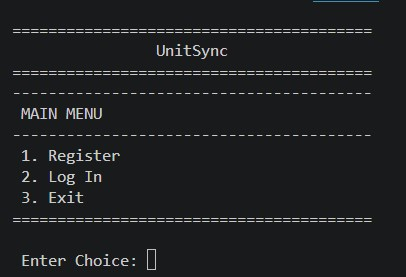

Project 1 - ROTC Cadet Duty Management System

Language: C++ | View Source Code
Description:
A mini system that manages the duty roster for ROTC cadets, allowing users to assign and view duties based on a schedule.
Key Concepts Used:
- Functions
- Sorting and Searching Algorithms
- Two-Dimensional Arrays
- Control
Structures (if-else, switch)
- Loops
Project 2 - SmartSpend System

Language: C++ | View Source Code
Description:
A mini system that helps users manage their expenses and track their spending habits.
Key Concepts Used:
- Functions
- Two-Dimensional Arrays
- Control Structures (if-else, switch)
- Loops
Project 3 - Calculator Using Function Template

Language: C++ | View Source Code
Description:
A mini system that implements a calculator using function templates to perform various arithmetic operations on different data types.
Key Concepts Used:
- Function Templates
- Control Structures (if-else, switch)
- Loops
Project 4 - UnitSync: ROTC Attendance Management System

Language: C++ | View Source Code
Github: View Repository
Description:
A multi-role attendance management system for ROTC Units with centralized announcements.
Key Concepts Used:
- Pointers
- Functions
- Dynamic Memory Allocation
Return: Main Page